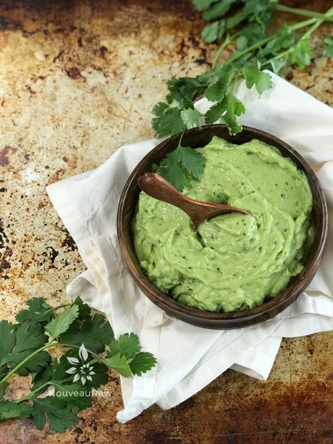

Cilantro Guacamole

~ raw, vegan, gluten-free, nut-free ~
Guacamole belongs in its own expansive culinary category. The beauty of guacamole is that the mild richness of avocado plays extremely well with a broad range of flavors. Whether superbly smooth or rustically chunky. It can go from a simple dip, to unusual and exotic.
Lets “Hass” some guacamole…
I recommend choosing ripe Hass Avocados and allow them to ripen a little longer than you think you should. Perfectly ripe avocados provide an unctuous, buttery base from which you can create hundreds of one-of-a-kind dips.
Too many guacamoles are marred by flavorless under-ripe avocados. The flavor will not be enjoyable no matter how you prepare it, and may even have an extremely bitter undertone.
Bring on the acid…
Another ingredient that often goes into guacamole is an acid, which balances out the fattiness of the avocado. You can use, for example, raw coconut vinegar, fresh lemon or lime. Even diced tomato would be enough to add that hint of acid. But the secret is to respect the avocado flavor by not going overboard with whatever acid that you chose.
Adding Aromatics…
To bump up the savory notes and to create the texture you can add scallions, chives or diced onion… preferably white onions rather than yellow or sweet onions, which can muddy the flavor. The key when adding aromatics is to grind them into a paste before adding to the mix. This will ensure that the dip is evenly and deeply flavored. If you are wanting chunky guacamole, grind only half and leave the remaining chunky. Shoot, there are 1001 ways to make guacamole… I can’t even begin to fathom all the possibilities. But there is one last ingredient that I feel is vital when making guacamole and that is salt. It pulls it together and awakens the flavors.
Ingredients:
- 2 large Hass avocados
- 1/4 cup fresh cilantro
- 1 small shallot
- 2 tsp raw coconut vinegar
- 1 tsp dried oregano
- 1/4 tsp Himalayan pink salt
- 1/4 tsp black pepper
Preparation:
- Place the avocado, cilantro, shallots, vinegar, oregano, salt, and pepper in the small bowl attached to the food processor. Process to the texture you desire.
- To store leftovers, click (here) on how to prevent browning.
- Enjoy within a few days.
- Looking for a divine way to enjoy this guacamole? Add a hefty dollop on top of my Nutless Veggie Burger Patty!
© AmieSue.com